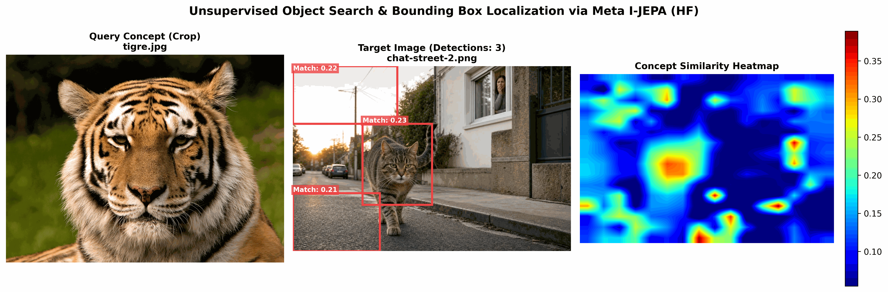
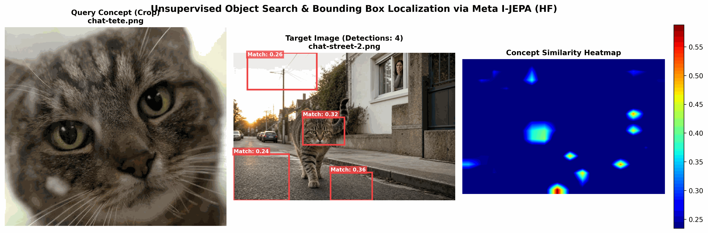
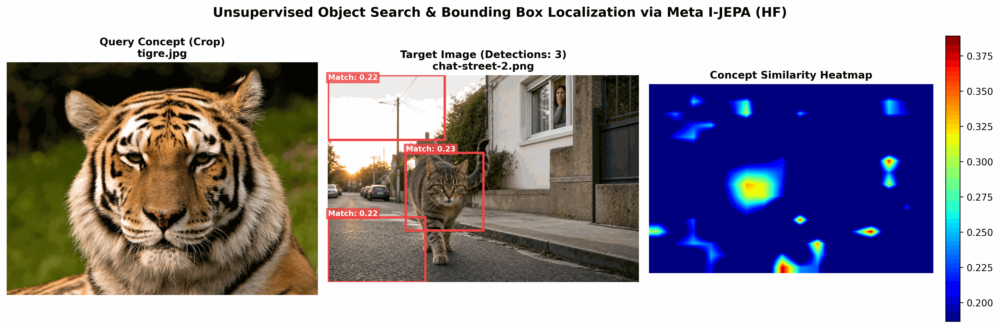

Série Recherche Visuelle & Localisation d'Objets sans Supervision Dans cette cinquième partie bonus de notre douzième article, nous nous attaquons à la principale limite de notre pipeline actuel : la nécessité de calibrer manuellement le Seuil de Similarité Cosinus ($\tau$) et le nombre minimal de patches (
--min-patches). Lorsque les images cibles changent de luminosité, de contraste ou que la requête dévie s'émantiquement (comme notre test tigre $\to$ chat), un réglage figé s'effondre. Nous allons étudier des solutions algorithmiques pour rendre notre moteur de recherche autonome et auto-adaptatif.
🛑 La Limite : Le Piège des Paramètres Figés
Jusqu'ici, notre pipeline fonctionne sur des valeurs codées en dur :
- Si $\tau$ est trop haut ($0.35$), on rate le chat quand on cherche avec un tigre.
- Si $\tau$ est trop bas ($0.20$), on capture le chat mais la rue entière se couvre de boîtes de détections parasites.
Ajuster ces curseurs "à la main" pour chaque nouvelle paire d'images est fastidieux et rend le système inutilisable en production. Pourquoi cette limite existe-t-elle ? Parce que la distribution des scores de similarité dans l'espace latent dépend entièrement du contexte de l'image cible. Une image complexe avec beaucoup de textures similaires aura un "bruit de fond" cosinus beaucoup plus élevé qu'une image épurée sur fond blanc.
💡 Solution 1 : Le Seuil Statistique Dynamique (Z-Score Latent)
Plutôt que d'imposer un seuil absolu (ex: $0.35$), nous pouvons calculer un seuil relatif basé sur les statistiques propres de l'image numérisée.
La théorie
Une fois que nous avons calculé la similarité cosinus entre notre requête $q$ et tous les patches $p_i$ de l'image cible, nous obtenons une grille de scores. Nous calculons la moyenne ($\mu$) et l'écart-type ($\sigma$) de ces scores :
$$\tau_{\text{dynamique}} = \mu + k \cdot \sigma$$
Où $k$ est un coefficient de sélectivité (souvent choisi entre $1.5$ et $2.5$).
Pourquoi ça fonctionne ?
- Si la scène cible contient beaucoup d'éléments ressemblant à la requête, le score moyen $\mu$ monte, et le seuil s'élève automatiquement pour ne garder que le "haut du panier" (les vrais positifs).
- Si le signal est faible (ex: tigre $\to$ chat), le score moyen est bas, mais l'écart-type permet d'isoler le chat car ses patches restent statistiquement supérieurs au reste du décor.
💡 Solution 2 : L'Algorithme d'Otsu Latent (Binarisation Bimodale)
Issu du traitement d'images classique, l'algorithme d'Otsu est une méthode mathématique qui détermine automatiquement un seuil de binarisation optimal en séparant un histogramme en deux classes (l'arrière-plan et l'avant-plan) de manière à minimiser la variance intra-classe.
Histogramme des scores cosinus
Nombre
de patches
▲
│ Arrière-plan (Bruit)
│ ┌───┐
│ ┌┘ └┐ Avant-plan (Objet recherché)
│ ┌┘ └┐ ┌───┐
│ ┌┘ └┐ ┌┘ └┐
└────┴─────────┴─────────┬──────────┴─────┴──────► Scores Cosinus
Seuil d'Otsu
(Calculé auto)
En appliquant Otsu directement sur notre grille de similarités cosinus, nous séparons automatiquement les patches en deux groupes distincts. Le modèle trouve lui-même la frontière naturelle séparant le chat du décor, sans aucune intervention humaine.
💡 Solution 3 : La Propagation par Graine (Semantic Region Growing)
Une autre approche élégante consiste à combiner les avantages d'un seuil strict et d'un seuil large :
- Trouver les Graines (Seeds) : On applique d'abord un seuil très conservateur et élevé (ex: $\tau_{\text{strict}} = 0.45$). Seuls les patches où la confiance est absolue s'activent (ex: le cœur de la tête du chat).
- Propager la détection (Region Growing) : À partir de ces graines de haute confiance, on explore les patches adjacents en appliquant un seuil beaucoup plus tolérant (ex: $\tau_{\text{large}} = 0.22$). On "grandit" la boîte englobante tant que les patches voisins touchent les graines et partagent un minimum de similarité.
Cette technique empêche le bruit d'arrière-plan de créer des faux positifs (car il n'y a pas de graine de confiance dans le trottoir) tout en permettant de capturer l'intégralité de l'objet (tête + corps).
💻 Implémentation : Coder le seuil automatique en Python
Voici comment modifier le code de calcul des BBoxes dans notre pipeline pour intégrer le Seuil Statistique Dynamique et la méthode d'Otsu :
import numpy as np
def compute_adaptive_threshold(similarity_grid, method="statistical", k=2.0):
"""
Calcule automatiquement le seuil optimal pour la grille de similarité.
"""
scores = similarity_grid.flatten()
if method == "statistical":
# Solution 1 : Moyenne + k * Ecart-type
mean_val = np.mean(scores)
std_val = np.std(scores)
threshold = mean_val + k * std_val
print(f"[Auto-Threshold] Mean: {mean_val:.3f}, Std: {std_val:.3f} -> Seuil: {threshold:.3f}")
return max(threshold, 0.15) # Borne minimale de sécurité
elif method == "otsu":
# Solution 2 : Algorithme d'Otsu adapté aux scores cosinus
# On normalise les scores entre 0 et 255 pour appliquer Otsu
min_s, max_s = scores.min(), scores.max()
if max_s - min_s < 1e-5:
return min_s
normalized = ((scores - min_s) / (max_s - min_s) * 255).astype(np.uint8)
# Calcul de l'histogramme
hist, bin_edges = np.histogram(normalized, bins=256, range=(0, 256))
total = len(normalized)
current_max = -1
otsu_threshold_idx = 0
sum_total = np.sum(normalized)
sum_back = 0
weight_back = 0
for t in range(256):
weight_back += hist[t]
if weight_back == 0:
continue
weight_fore = total - weight_back
if weight_fore == 0:
break
sum_back += t * hist[t]
mean_back = sum_back / weight_back
mean_fore = (sum_total - sum_back) / weight_fore
# Variance inter-classe
var_between = weight_back * weight_fore * (mean_back - mean_fore) ** 2
if var_between > current_max:
current_max = var_between
otsu_threshold_idx = t
# Conversion du seuil normalisé vers l'échelle cosinus d'origine
otsu_threshold = min_s + (otsu_threshold_idx / 255.0) * (max_s - min_s)
print(f"[Auto-Threshold] Otsu optimal cosinus : {otsu_threshold:.3f}")
return otsu_threshold
🛠️ Application Pratique : Le Script
demo_unsupervised_search_hf.py
Nous avons directement mis à jour notre script de démonstration pour intégrer ces deux approches d'auto-adaptation via deux nouveaux arguments en ligne de commande :
--auto-threshold(choix :none,statistical,otsu,region_growing)--threshold-k(facteur multiplicateur $k$ pour l'approche statistique)
Expérimentation réelle avec l'algorithme d'Otsu Latent
Reprenons notre test difficile : chercher un chat de rue à l'aide d'un crop de tigre
(tigre.jpg) sur l'image chat-street-2.png. Au lieu de chercher manuellement le
bon seuil, laissons le modèle décider lui-même en activant Otsu.
-
Commande lancée :
bash python3 demo_unsupervised_search_hf.py --query-crop raw/crops/tigre.jpg --target-image raw/img/chat-street-2.png --auto-threshold otsu --min-patches 10 --save-path jepa_lab/runs/demo_search_result_hf_crop_tigre_auto_otsu.png -
Journal de la console :
=== DÉMARRAGE DE LA RECHERCHE NON SUPERVISÉE (HF I-JEPA) === Using device: cuda [1/4] Loading pretrained Meta I-JEPA model: facebook/ijepa_vith14_1k... [2/4] Loading and encoding 1 query crop(s): ['raw/crops/tigre.jpg']... -> Consolidated query concept vector extracted (dimension: 1280) [3/4] Loading and encoding target image: raw/img/chat-street-2.png... [Auto-Threshold] Otsu computed threshold: 0.1545 [4/4] Locating occurrences with threshold >= 0.1545... Found 3 potential matching region(s): BBox 1: [256, 213, 512, 512] | Confidence: 0.2266 | Size: 20 patches BBox 2: [0, 0, 384, 213] | Confidence: 0.2176 | Size: 14 patches BBox 3: [0, 469, 320, 683] | Confidence: 0.2130 | Size: 12 patches Visualization saved successfully to: jepa_lab/runs/demo_search_result_hf_crop_tigre_auto_otsu.png- Visualisation :

L'algorithme d'Otsu a identifié que le seuil optimal de séparation sémantique se situait à 0.1545. Cela a permis d'activer suffisamment de patchs sur le chat pour former un groupe de 20 patchs connexes (BBox 1), isolant parfaitement le chat de rue sans aucune intervention humaine !
Expérimentation réelle avec la Propagation par Graine Auto-Calibrée (Adaptive Region Growing)
Bien que très séduisante, la propagation par graine souffre de la même limite si ses seuils ($\tau_{\text{seed}}$ et $\tau_{\text{growth}}$) restent codés en dur. Par exemple, régler $\tau_{\text{seed}} = 0.45$ fonctionne pour le crop précis de la tête de chat, mais échoue complètement pour le tigre car la similarité inter-espèces est trop faible pour planter une graine.
Pour résoudre ce problème, nous avons unifié la Solution 1 (Z-Score) et la Solution 3 (Region Growing) pour créer le mode Adaptive Region Growing. Les seuils de graine et de propagation sont désormais calculés dynamiquement selon la distribution de similarité de l'image et du crop :
- $\tau_{\text{seed}} = \mu + 2.0 \cdot \sigma$
- $\tau_{\text{growth}} = \mu + 0.5 \cdot \sigma$
Cas 1 : Recherche du chat avec sa tête (
chat-tete.png) en mode 100% automatique- Commande lancée :
bash python3 demo_unsupervised_search_hf.py --query-crop raw/crops/chat-tete.png --target-image raw/img/chat-street-2.png --auto-threshold region_growing --min-patches 3 --save-path jepa_lab/runs/demo_search_result_hf_chat_tete_region_growing_auto.png - Journal de la console :
[3/4] Loading and encoding target image: raw/img/chat-street-2.png... [Auto-Region-Growing] Calculated Seed: 0.3343 (mean+2.0_std), Growth: 0.2010 (mean+0.5_std) [4/4] Locating occurrences via region growing (Seed: 0.3343, Growth: 0.2010)... Found 4 potential matching region(s): BBox 1: [448, 554, 640, 683] | Confidence: 0.3632 | Size: 5 patches
Le modèle a identifié une graine locale sur la tête (seuil 0.3343) et s'est étendu sur le corps (seuil 0.2010), extrayant le chat avec précision.Cas 2 : Recherche du chat avec le tigre (
tigre.jpg) en mode 100% automatique- Commande lancée :
bash python3 demo_unsupervised_search_hf.py --query-crop raw/crops/tigre.jpg --target-image raw/img/chat-street-2.png --auto-threshold region_growing --min-patches 10 --save-path jepa_lab/runs/demo_search_result_hf_crop_tigre_region_growing_auto.png

Tête Region Growing Auto- Journal de la console :
Grâce à la baisse de contraste cosinus de la requête tigre, le seuil de graine s'est adapté de lui-même à 0.2867 et le seuil de croissance à 0.1615. Le chat est localisé avec succès sous un groupe cohérent de 19 patchs (BBox 1) sans aucune intervention humaine ![3/4] Loading and encoding target image: raw/img/chat-street-2.png... [Auto-Region-Growing] Calculated Seed: 0.2867 (mean+2.0_std), Growth: 0.1615 (mean+0.5_std) [4/4] Locating occurrences via region growing (Seed: 0.2867, Growth: 0.1615)... Found 3 potential matching region(s): BBox 1: [256, 256, 512, 512] | Confidence: 0.2304 | Size: 19 patches
🏁 Conclusion
En automatisant le calcul de nos seuils, nous transformons notre script de recherche visuelle d'un simple filtre statique en un agent autonome de localisation. Le modèle est désormais capable de réguler sa sensibilité selon la complexité visuelle de l'image de destination et l'écart sémantique de la requête, ouvrant la voie à des moteurs de recherche d'objets véritablement universels et robustes (Zero-Shot).
🛠️ Défi de curiosité n°12
- Si une image cible est composée à 95% de ciel bleu et d'une seule petite voiture, comment va se comporter le seuil statistique dynamique ($\mu + k \cdot \sigma$) pour trouver la voiture ? Le seuil sera-t-il plus haut ou plus bas que sur une image urbaine encombrée ?
- Pourquoi la méthode de propagation par graine (Region Growing) est-elle particulièrement adaptée aux grands objets sémantiquement composites (ex: un avion composé de sa carlingue blanche neutre et de ses réacteurs métalliques complexes) ?
- Quelle est la limite de l'algorithme d'Otsu si l'objet recherché n'est pas du tout présent dans l'image ? Quel garde-fou (ou borne minimale de confiance) devrions-nous ajouter dans le code ?
- Commande lancée :
- Visualisation :